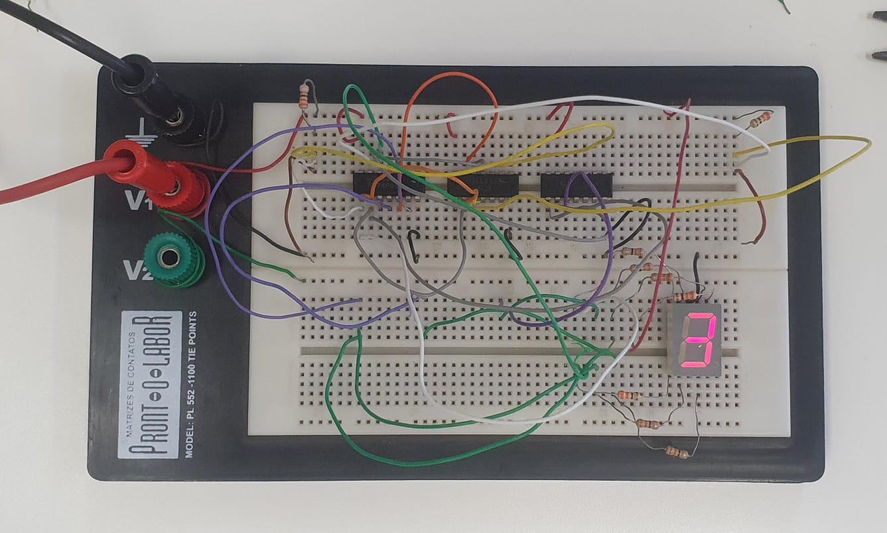

NOTA #1
A + B (OU)
A * B (E)
| A | Ā |
|---|---|
| 0 | 1 |
| 1 | 0 |

| A | B | A * B |
|---|---|---|
| 0 | 0 | 0 |
| 0 | 1 | 0 |
| 1 | 0 | 0 |
| 1 | 1 | 1 |

| A | B | A * B |
|---|---|---|
| 0 | 0 | 0 |
| 0 | 1 | 1 |
| 1 | 0 | 1 |
| 1 | 1 | 1 |

| A | B | A * B |
|---|---|---|
| 0 | 0 | 0 |
| 0 | 1 | 1 |
| 1 | 0 | 1 |
| 1 | 1 | 0 |

| A | B | A * B |
|---|---|---|
| 0 | 0 | 1 |
| 0 | 1 | 1 |
| 1 | 0 | 1 |
| 1 | 1 | 0 |
$$A + B = B + A$$
Associatividade: $$(A + B) + C = A + (B + C)$$
Distributividade
$$A\cdot (B + C) = A \cdot B + A \cdot C$$
$$\overline{A \cdot B} = \overline{A} + \overline{B}$$
$$\overline{A + B} = \overline{A} \cdot \overline{B}$$
Vídeo sobre o Mapa de Karnaugh
Para essa prática, foram usados três circuitos integrados, o SN7402, SN7404 e o SN7408, para montar, a partir do vídeo abaixo, um circuito de um display de 2 bits.
Vídeo sobre a prática do display de 7 segmentos

Abaixo, o circuito final:

A estrutura anterior funciona, porém funciona apenas para dois bits, e sua escalabilidade não é muito efetiva, dependendo de um grande espaço para alocar mais bits.
Para solucionar isso, existe um circuito integrado, o TC4511BP, que acumula todo o circuito acima em um único chip, com entradas para até 4 bits. Abaixo, o circuito foi feito com esse circuito

l

O 555 funciona a base de dois comparadores. Ele começa o carregamento de um capacitor por dois resistores, até chegar em um ponto que, ao ser colocado em um comparador, faz com que o 555 mude o ponto de comparação para o segundo comparador, que então é novamente carregado, seguindo o mesmo processo. Esse carregamento e descarregamento sucessivo pelos dois comparadores gera esse comportamento oscilatório.
Uma das configurações do 555 é a configuração astável:

O pinout de um 555 é:
Abaixo, um circuito montado com 555 em configuração astável: